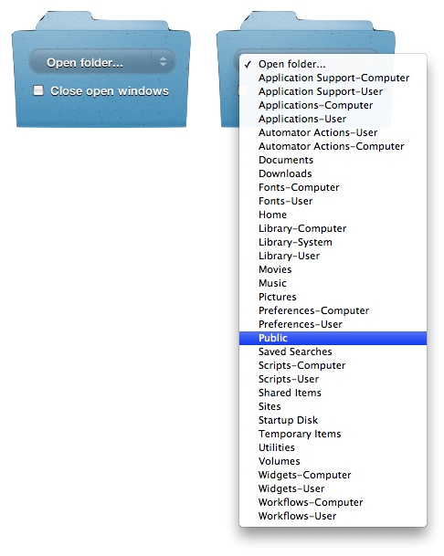
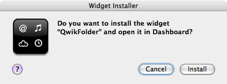

The QwikFolder Widget
Have you ever had to quickly navigate to one of the many special folders in the operating system, such as the Shared Items folder, or your Public folder, or Computer Preferences folder? If you're like most people you open a new Finder window, change it to column view, and start transversing the disk’s folder hierarchy. There's an easier way and it’s only a click away… the QwikFolder Widget.
The QwikFolder Widget provides single-click access to over 30 special folders such as the Utilities folder, the Application Support folder, and the various Preferences folders. To use, just summon Dashboard, click on Qwikfolder’s popup menu, select the folder you want, and the folder you select automatically appears opened on the desktop.

The QwikFolder Widget (left), displaying folder destinations (right).
Installation
Download and unpack the archive. Then, double-click on the widget file to summon the following installation dialog:

Click the Install button to add the widget to the set of widgets already installed on your computer.
AppleScript-Based
The QwikFolder widget uses AppleScript to accomplish its work. For those who are interested in learning how to use AppleScript in wwidgets, open the QwikFolder widget in DashCode — Apple’s IDE for creating and editing Dashboard Widgets. Dashcode is included for free as part of the Developer Tools on your Mac OS X Leopard system install disks.